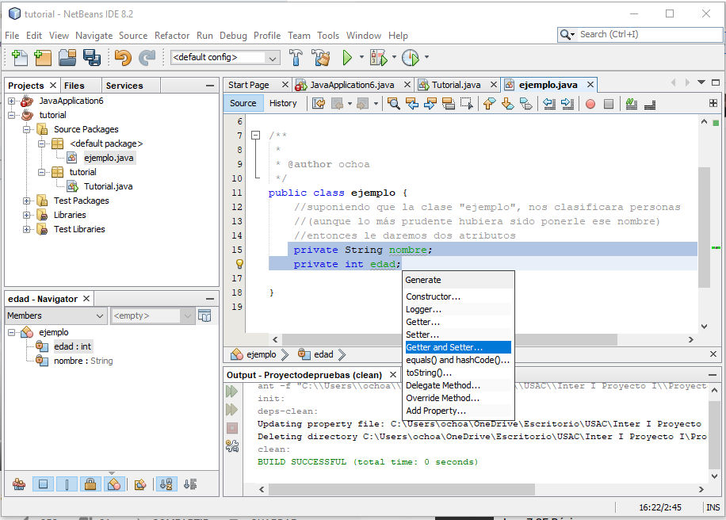
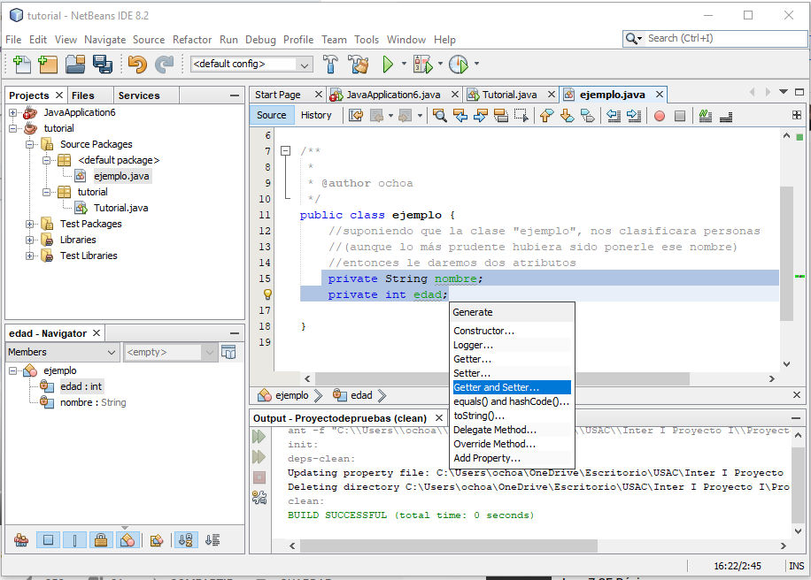

Cómo hacer una Clase y sus Instancias (en NetBeans)
Abrir imágenes en una nueva pestaña de ser necesario.
Primero es lo primero, abriremos nuestro programa y crearemos un nuevo proyecto, nombrandolo y guardandolo como gustemos.
(Nota: Este paso puede saltarse si lo está aplicando a un proyecto ya existente)


Paso 2
Creamos una clase, este paso puede ser muy similar al anterior o no, depende de como querramos hacerlo:
1. Escribiendo el código "public class clase {" en el main.
2.Dandole en "Archivo" y luego en "Crear nuevo archivo", donde escogeremos que sea una clase.
Yo usaré la segunda, y le llamaré "ejemplo" a esta clase.
(Nota: asegurarse de colocar esta clase dentro del paquete de nuestro proyecto.)


Toca darle atributos a nuestra clase, porque ¿Que es una clase sin atributos? Para esto, trataremos la clase ejemplo, como si fuera algo para saber el Nombre y Edad de una persona
(Si quiere aprender más sobre atributos haga click aquí)

Lo más recomendable aquí es usar un Getter & Setter, y eso haremos.
(Si quiere aprender más sobre Getter & Setter haga click aquí)
 



De manera automática tenemos varios métodos de clase gracias a Getter & Setter, pero de igual manera hay un sinfín de métodos e instancias que podemos crear, yo crearé unas simples pero queda a su criterio que clase de instancias quiera crear.
(Si quiere aprender más sobre Métodos e Instancias de clase haga click aquí)

Procedemos a regresar a nuestra main class, solamente para llamar las instancias y métodos, también hay maneras diferentes de hacer esto, dependiendo de que querramos hacer, y tampoco es obligatorio hacerlo en la main class, puede ser en otra clase donde querramos llamar esta clase que hemos creado.
(Si quiere aprender más sobre como llamar Métodos e Instancias de clase haga click aquí)

Por último pero para nada menos importante, toca probar que no haya errores.
Ya que si los tienes toca ver en que hemos fallado...


¿Te quedan dudas?
¡Dale un vistazo a esto!
Espero haya sido algo de ayuda para usted, ¡Hasta Pronto!